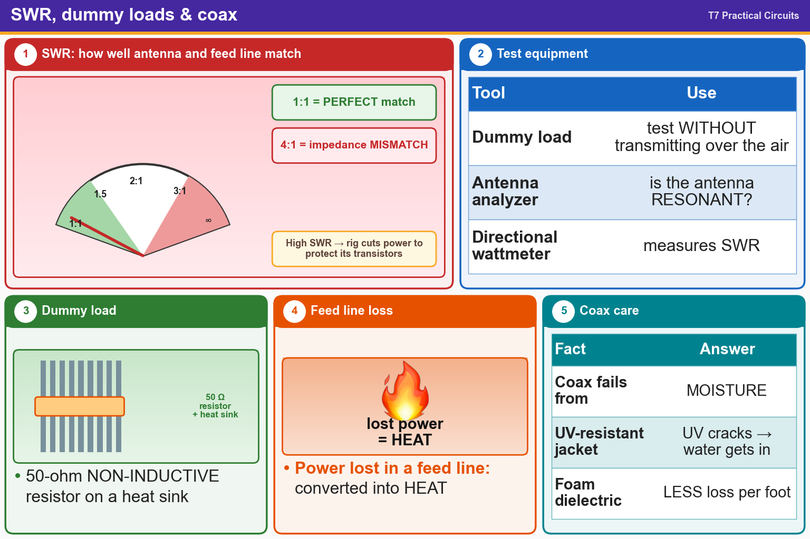

💡 1:1 = perfect match. Dummy load = 50 Ω resistor. Coax fails from moisture; foam has less loss.
Pick an answer for each question, then press Grade at the bottom.
T7C04
What reading on an SWR meter indicates a perfect impedance match between the antenna and the feed line?
✘A.50:50
✔B.1:1
✘C.Zero
✘D.Full Scale
T7C06
What does an SWR reading of 4:1 indicate?
✘A.Loss of -4 dB
✘B.Good impedance match
✘C.Gain of +4 dB
✔D.Impedance mismatch
T7C05
Why do most solid-state transmitters reduce output power as SWR increases beyond a certain level?
✔A.To protect the RF output amplifier transistors
✘B.To comply with FCC rules on spectral purity
✘C.Because power supplies cannot supply enough current at high SWR
✘D.To lower the SWR on the transmission line
T7C01
What is the primary purpose of a dummy load?
✔A.To prevent transmitting signals over the air when making tests
✘B.To improve the signal-to-noise ratio of a receiver
✘C.To prevent over-modulation of a transmitter
✘D.To improve the efficiency of an antenna
T7C03
What does a typical RF dummy load consist of?
✘A.A low-voltage power supply and a DC relay
✘B.A low-voltage power supply and an AC relay
✔C.A 50-ohm non-inductive resistor mounted on a heat sink
✘D.A 50-ohm inductive reactance mounted in a shielded enclosure
T7C02
Which of the following is used to determine if an antenna is resonant at the desired operating frequency?
✔A.An antenna analyzer
✘B.A Q meter
✘C.A VTVM
✘D.A frequency counter
T7C08
Which instrument can be used to determine SWR?
✘A.Iambic pentameter
✘B.Ohmmeter
✘C.Voltmeter
✔D.Directional wattmeter
T7C07
What happens to power lost in a feed line?
✘A.It increases the SWR
✔B.It is converted into heat
✘C.It distorts the signal
✘D.It is radiated as harmonics
T7C09
Which of the following causes failure of coaxial cables?
✘A.Solder flux contamination
✘B.Rapid fluctuation in transmitter output power
✘C.Operation at 100% duty cycle for an extended period
✔D.Moisture contamination
T7C10
Why should the outer jacket of coaxial cable be resistant to ultraviolet light?
✘A.Ultraviolet light can increase losses in the cable’s jacket
✘B.Ultraviolet light can increase the resistance of the conductors
✔C.Ultraviolet light can damage the jacket and allow water to enter the cable
✘D.Ultraviolet and RF signals can mix, causing interference
T7C11
What is an advantage of foam-dielectric versus solid-dielectric coaxial cable?
✘A.It is more resistant to moisture contamination
✘B.It has higher voltage breakdown
✔C.It has less loss per foot
✘D.It has a better impedance match to 50 ohms